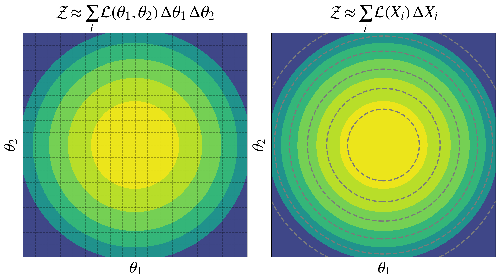
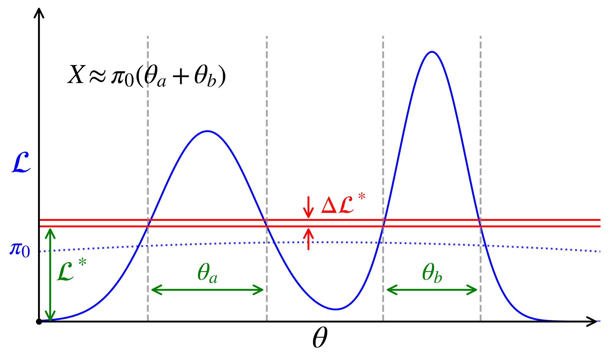
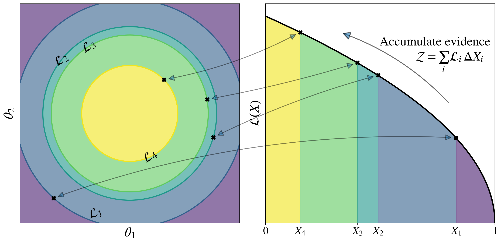

22.6. Nested sampling#
Prelude#
Nested sampling (or NS) is a technique invented by John Skilling to estimate the Bayesian evidence (and we get a sampling of the posterior as a by-product, see below). Let us recall the ingredients of Bayes’ theorem:
where we have introduced a condensed notation for clarity in the following discussion. We can write \(\evidence\), the evidence (or marginal likelihood or normalizing constant), as
so, as expressed here, it is an integral in the often high-dimensional space of \(\pars\). You can think of the posterior as the shape of the integrand of this integral while \(\evidence\) is the magnitude of the integral. The usual MCMC sampling techniques based on importance sampling are designed to estimate the relative shape in terms of a representative sampling of points \(\pars_i\) found via a Markov chain. But finding the absolute normalization can be a much greater challenge.
To gain intuition about NS, first recall the standard integration method as a Riemannian sum: we divide space into small volumes (e.g., multi-dimensional cubes) and approximate the integral as a sum over the integrand evaluated in each volume times the volume (see the left panel of Fig. 22.4). The cost of such an integral grows exponentially with the dimension of the integral (“the curse of dimensionality”), which is why we turned to Monte Carlo integration in the first place. To meet this challenge a different way, NS transforms the problem into finding a statistical estimate of a one-dimensional integral.
Good references for NS include:
[SS06] D.S. Sivia with J. Skilling, “Data Analysis : A Bayesian Tutorial”, Oxford University Press (2006).
[A+22] G. Ashton et al., “Nested sampling for physical scientists”, Nature (2022).
[Buc23] J. Buchner, “Nested sampling methods”, Statistical Surveys (2023).
[ML26] L. Martino and L. Fernando, “Nested Sampling: A Critical and Comprehensive Theoretical Guide”, arXiv:2606.17916 (2026).
See also method discussions in the documentation of NS implementations, such as dynesty and Ultranest.
Basic idea of NS#
{kind=link}

Fig. 22.4 On the left is a schematic for evaluating the evidence integral by summing over uniform small volumes in the multi-dimensional parameter space (here the two-dimensional area is \(\Delta \theta_1 \Delta \theta_2\)). On the right is a schematic for evaluating the same integral but now by grouping all points with the same likelihood value into small volumes \(\Delta X_i\) and summing over \(\mathcal{L}(X_i)\Delta X_i\), which approximates (22.10).#
A key observation leading to NS is that we can use other shapes beside cubes to estimate an integral, if volume elements are such that \(p(\pars)\) is almost constant for any shape. In particular, we can group together into small volumes all points with the same value of the likelihood, as in the right panel of Fig. 22.4. To get to an expression taking advantage of this observation, we first split the evidence integral into an integration over likelihood values \(\threshold\), where for each \(\threshold\) we have an integral over the enclosed part of parameter space weighted by the prior:
Here the integral in square brackets is the volume variable \(X\), defined by
which is the prior-constrained volume enclosed by contour \(\threshold = \like(\pars)\) (which may consist of disconnected regions).
{kind=link}

Fig. 22.5 Schematic example showing how the prior-weighted scalar volume \(X\) is determined at a given value of \(\threshold\). The vertical dashed lines indicate the limits in \(\theta\) for which \(\like(\pars) > \threshold\); in one dimensions these define the lengths \(\theta_a\) and \(\theta_b\). The prior \(\pi(\theta)\) is approximately constant (equal to \(\pi_0\)) in those regions, so the integral defining \(X\) is approximately \(X \approx \pi_0(\theta_a + \theta_b)\). This piece contributes to the evidence integral as \(X \Delta\threshold\).#
In Fig. 22.5 we show a one-dimensional example of how this works. As we step through each value of \(\threshold\) in the outer integral, this defines a region in \(\theta\) where the likelihood satisfies \(\like(\theta) > \threshold\). In the example, the current region, which is disconnected, is defined by lengths \(\theta_a\) and \(\theta_b\). In one dimension, the internal integration over \(\theta\) for an approximately constant \(\prior(\theta) \approx \prior_0\) yields \(X \approx \prior_0 (\theta_a + \theta_b)\). In two dimensions, this region would be the area defined by a slice at height \(\threshold\), in three dimensions it would be a 3D volume, and so on. Note that there is no problem with the likelihood being multimodal. Note also that \(X\) is monotonic in \(\threshold\) (this may be easiest to see if you visualize a line at \(\threshold\) starting well above the peak and being moved downward; then \(X\) always increases, even if \(\prior(\pars)\) is not constant). We multiply \(X\) by the width \(\Delta\threshold\) to get the contribution to the evidence, and sum this up for all \(\threshold\) to get the total evidence.
When the threshold \(\threshold\) is zero, \(X=1\) (the entire prior space is included, and the prior is normalized). As the threshold increases toward the peak value, the allowed space shrinks, and \(X\) approaches zero. Because \(X\) is monotonic and decreases smoothly from 1 to 0, we can invert \(X(\threshold)\) to find \(\threshold(X)\). Integrating the evidence integral by parts yields the NS evidence identity,
assuming \(\threshold(X)\), the inverse of \(X(\threshold)\), exists and \(\evidence\) is finite. If we can evaluate the iso-likelihood contour \(\like_i\equiv \like(X_i)\) (dropping the \(\star\)) associated with samples from the prior volumes
then we can compute the evidence \(\evidence = \int_0^1 \like(X)\,dX \approx \sum_i \like_i \Delta X_i\) by basic numerical quadrature (e.g., the trapezoid rule). Computing the evidence using these “nested shells” is what gives Nested Sampling its name. The NS procedure is illustrated schematically in Fig. 22.6.
{kind=link}

Fig. 22.6 Schematic representation of NS for a two dimensional problem. The samples \(X_i\) from the prior volumes at \(\like_i\) satisfy \(1 > X_1 > X_2 > X_3 > X_4 > 0\). The corresponding \(\Delta X_i\)s are multiplied by the \(\like_i\)s and summed to approximate the evidence: \(\evidence = \int_0^1 \like(X)\,dX \approx \sum_i \like_i \Delta X_i\).#
This sounds great, but we realize that calculating the \(X_i\)s directly involves a series of high-dimensional integrals that are exactly what we want to avoid! So we will estimate the \(X_i\)s statistically.
NS in practice#
In an implementation of NS one evolves a collection of so-called “live points” through the parameter space. We start with \(\nlive\) points drawn from the prior. The prior should cover the full range of parameters being sampled. The likelihood is calculated for all of the live points, and the least likely (i.e., lowest value of \(\like\)) is removed and a new draw is made to replace the “dead” point. This lowest value is \(\threshold\). (We keep track of the dead points, which give an estimate of the posterior, see below).
Suppose we could (magically) know the prior volume \(X_i\) from (22.11) associated with each live point \(\theta_i\). If the current volume is \(X_{i-1}\), then the variables \(u_j = X_j / X_{i-1}\) would all be uniformly distributed in \([0,1]\).
Checkpoint question
Intuitively, why is \(u_j\) uniformly distributed in \([0,1]\)?
Answer
Imagine dividing the prior into nested likelihood regions that have prior volumes \(X = 0.1, 0.2, 0.3, \ldots, 1\). Then the region with \(X(\theta) \equiv X(\like(\theta)) < 0.2\) has, by construction, 20% of the prior probability. So for a random draw of \(\theta\), the cumulative probability of the corresponding \(X < 0.2\) is \(0.2\). And, generally, the cumulative probability for \(X < x\) is \(x\). This is the cumulative probability distribution for a uniform distribution of \(X\).
If we have already eliminated points so that the current volume is \(X_{i-1}\), then the uniform distribution is between \(0\) and \(X_{i-1}\), so to make it uniform in \([0,1]\) we define \(u_j\) with \(X_{i-1}\) divided out.
This result is independent of the details of the likelihood or the prior, because \(X\) has been defined in terms of enclosed prior probability, so it automatically turns prior draws into uniform random variables.
Removing the point with the lowest likelihood means removing the one with the highest \(X\), so
which means (because the \(u_i\)s are independent):
where \(F\) is the cumulative distribution and \(p(t)\) therefore follows as its derivative.
Checkpoint question
Why is this a Beta distribution?
Answer
The general Beta pdf is
and \(\Gamma(z)\) is the gamma function. Here \(a=\nlive\) and \(b=1\) to match \(p(t) = \nlive t^{\nlive - 1}\) and \(B(\nlive,1) = 1/\nlive\).
Checkpoint question
Why is \(t\) so close to 1? Does this make sense intuitively?
Hint
Imagine you are determining \(t\) from 50 points uniformly distributed between 0 and 1.
Answer
Intuitively it makes sense: with 50 points between 0 and 1 and you are taking the largest one, you expect it to be close to 1.
Mathematically, with \(\nlive = 50\), the density is \(p(t) = 50 t^{50}\) and any number not close to 1 raised to an exponent of 50 will be close to zero, so the strength is concentrated near 1.
This is the statistical shrinkage rule. So while there really is a sequence of \(X_i\)s, they are irregular and random because the live points themselves were randomly drawn. The NS algorithm doesn’t know these while it does know \(\like_i\) (as noted above, calculating the \(X_i\) would be a difficult multidimensional integral of the type we are trying to avoid). So, in fact, representative values are used in practice:
The process is repeated over many iterations and the evidence accumulated from
where \(\Delta X_i = X_{i-1} - X_i\). The iterations are stopped when the remaining evidence is negligible (various stopping criterion are used in different implementations of NS).
As a by-product, posteriors for \(\pars\) are acquired “for free” from the same dead points by assigning each sample its associated importance weight
To determine replacement live points, there are different strategies used by different NS implementations. For example, to do region sampling, a geometric shape (e.g., an ellipse) is constructed around the live points and a new point is drawn from within the region, rejecting it if it falls outside the region. Below we examine in detail one such implementation.
Simulation of nested sampling#
To establish some intuition about NS in practice, we return to the excellent set of interactive demos by Chi Feng. You might want to refresh your memory first on MH and HMC sampling before jumping into the nested sampling demo.
Controls for the MCMC simulations
The initial simulation uses MH sampling. To switch to an implementation of nested sampling, select
Open Controlsand pull down theAlgorithmmenu and selectRadFriends-NS. Note theAlgorithm Options, wherenumLivePoints\(= \nlive\) is set.After making changes, use
Close Controlsto avoid obscuring the simulation.The initial
Target distributionshould bebanana, which is a good choice to demonstrate the nested sampling algorithm.But for orientation, you might want to first switch the
Target distributiontostandard. This distribution is a two-dimensional Gaussian (just the product of two one-dimensional Gaussians).If you uncheck the
Autoplaybox, you can use theStepbutton to see the algorithm carried out one step at a time.Use the
Resetbutton to clear the live points and start again with the full prior.
In standard MCMC (like Random Walk or HMC), the histograms accumulate sequentially. Every time a single particle takes a step, the algorithm records its coordinate and adds exactly one tally mark to the corresponding bin. Nested Sampling, however, does not follow a single particle. It tracks an entire population of active (live) points simultaneously, weighting their contributions based on the prior volume they represent.
Weighting by Posterior Mass: Because Nested Sampling’s goal is to compute the total integral (\(\evidence\)), every point that gets killed/replaced carries a specific “weight” (\(w_i = L_i \cdot \Delta X_i\)), which represents how much total probability mass that point occupies.
The Histogram Addition: In the visualization, the histograms are built by accumulating these weights. When a point is eliminated, its position along the X and Y axes is recorded into the histograms, multiplied by the fractional volume it leaves behind.
Notes for the RadFriends-NS simultation:
Initially, points are drawn from the entire parameter space (green) weighted by the prior. At any time, the number of points will match the setting of
numLivePoints. You might want to first set it to a low number (10 is the least) and switch off autoplay so that you count each of the dots and watch what happens step by step.In each step, the live point with the lowest likelihood (worst fit) is removed, and a better one sought. At each removal, the volume sampled by the live points shrinks. If you go step-by-step (
Autoplayunchecked) with a small number of points, you can identify by eye the point with the lowest likelihood (it is easiest to start with thestandardtarget distribution). When you take a step it will disappear. The green arrow visualizes the birth of a new, valid replacement point; it points from a randomly chosen live point (different from the one about to die) to the sampled next point, which will be added to the set of live points. There are red points to indicate potential next points that do not have a higher likelihood, and therefore are rejected as candidate live points.To still sample from the prior, RadFriends creates ellipsoids around all live points (not just the one being removed) and samples from them. The ellipsoid size is determined by bootstrapping: Some points are randomly left out, and the ellipsoids have to be large enough so that they could have been sampled. This is repeated several times. In Ultranest, the ellipsoid shape is learnt as well. Other NS algorithms have other ways to do the sampling.
Nested sampling proceeds to the peak, keeping track of the likelihood. The volume becomes smaller and smaller. At some point, the remainder does not contribute any probability mass, and the exploration is finished.
The removed points are weighted by their likelihood and the volume they represent. These are the posterior samples (histograms).
Why do so many points appear initially in the histograms?
The instant appearance of many bins on Step 1 of the Rad-Friends-NS simulation is the result of a specific programmatic sequence in the rendering engine. Before the simulation officially begins iterating, the code checks the likelihood of all 40 randomly scattered points (assuming you are using the default \(\nlive=40\). The visualization code treats this entire initial batch of 40 points as the starting baseline. Because a histogram cannot show “live” floating points (it can only record permanent data data-points), the code takes all \(\nlive\) initial locations and puts them into the histogram array simultaneously as a single initialization event. You are seeing the birth of the entire population rendering all at once, not a single particle moving. Thus, the code pushes the coordinates of all \(\nlive\) points into the histogram bin counters in a single clock cycle. If you have 40 points, up to 40 different bins across the X and Y axes instantly receive a value.
Once that initial batch of \(\nlive\) points is registered into the visualization framework, the simulation settles into its actual loop:
Step 2: One single worst point is removed. One new green arrow finds one replacement point. Therefore, only one new coordinate is added to the histogram.
Step 3: Only one point is replaced. Only one contribution is added to a single bin.
The massive burst of bins is a one-time initialization dump required to set up the population ecosystem on screen. Every step after that will only modify a single point at a time, making the progress look slow and incremental from that moment forward.
The Life Cycle of a Green Arrow in RadFriends-NS
The Replacement Goal: The algorithm identifies the “worst” active point in the entire population (the point with the lowest likelihood density) and marks it to be destroyed.
The Originating End (The Tail): To find a replacement, the algorithm randomly selects one of the other, surviving active points to act as a parent. The tail of the green arrow sits exactly on this surviving parent point.
The “Friend” Ball: The algorithm draws a radius (the “Rad” in RadFriends) around that parent point to define a local neighborhood.
The Pointy End (The Tip): The algorithm randomly samples a new coordinate inside that neighborhood. If this new coordinate has a higher likelihood than the “worst” point, it is accepted. The tip of the green arrow lands on this new location.
Summary of the Visual Mechanics
The Tail: The surviving point chosen to spawn a new candidate.
The Tip: The successful new point that instantly takes the place of the dead, lowest-likelihood point.
The Deleted Point: The actual point being replaced vanishes from the screen elsewhere in the cluster without an arrow drawn directly to it.
Other notes:
The RadFriends algorithm determines the radius of the proposal region dynamically. This resulting radius builds a local bounding region around each surviving point. By overlapping these regions across all active points, a collective “friend” zone envelope is formed that wraps around the entire high-density target landscape.
A red arrow represents a failed proposal where a newly sampled point is rejected. This occurs because the algorithm failed to meet the strict criterion of Nested Sampling: every new point must have a higher likelihood density than the worst point in the current population. Just like a green arrow, a red arrow starts at the randomly selected parent point. The population remains unchanged, no points are replaced, and the algorithm tries again from a new random parent.
Multimodal sampling#
Now switch the Target distribution to multimodal. Compare the performance of nested sampling to MH or HMC.
We will compare several sampling techniques in finding multimodal posteriors and calculating evidence integrals in demo notebooks in the next chapter.
Summary of Nested Sampling#
Comparison of Nested Sampling, Metropolis-Hastings, and HMC simulations
RadFriends-NS (Nested Sampling) differs fundamentally from algorithms like Metropolis-Hastings (MH) and Hamiltonian Monte Carlo (HMC) because it is designed to calculate a total volume (the Bayesian evidence) rather than just exploring a continuous path (or multiple paths in parallel).
Algorithm |
Exploration Strategy |
Behavior of Arrows |
Best Used For |
|---|---|---|---|
RadFriends-NS (RadFriends Nested Sampling) |
Shrinks a contour to isolate high-density zones while keeping a population of active points. |
Radial clusters. Green arrows radiate outward inside an adaptive bounding region (a “friend” ball) to replace the lowest-likelihood point. |
Multi-modal distributions and calculating Bayesian evidence. |
Random Walk MH (Metropolis-Hastings) |
Takes blind, random steps in any direction from a single active point. |
Jagged, local paths. Shows many red arrows (rejections) because random steps frequently land in low-probability areas. |
Simple, low-dimensional distributions. |
HMC (Hamiltonian Monte Carlo) |
Uses physics simulation (gradient/slope) to glide smoothly across the distribution. |
Long, sweeping curves. Green arrows form long, elegant trajectories with very few red arrows, easily moving between distant peaks. |
Complex, high-dimensional, and continuous distributions. |
Visualizing the Difference: NS vs. MCMC#
Aspect |
Traditional MCMC (e.g., HMC, Metropolis) |
Nested Sampling (e.g., RadFriends-NS) |
|---|---|---|
Mathematical Goal |
Samples proportionally to the target density to map the shape of the posterior. |
Directly calculates the absolute volume under the likelihood curve. |
The Integration Issue |
Cannot easily compute \(\evidence\) because it does not track the total volume of unvisited spaces. |
Explicitly solves \(\evidence\) by systematically compressing the known prior volume. |
Handling Phase Transitions |
Often gets trapped on a single peak, missing entire “islands” of probability. |
Compresses all modes uniformly, naturally isolating multiple peaks as the volume shrinks. |
Every time you see a green arrow replace a point in the RadFriends simulation, the algorithm is taking one more step down the \(X\)-axis (from 1 toward 0). It locks in the likelihood of the rejected point (\(\like_i\)), shrinks the remaining volume estimate (\(X_i\)), and adds another rectangle to the grand total of the Bayesian Evidence (\(\evidence\)).
Advantages of nested sampling
Returns results for both model comparison and parameter inference at the same time.
Successful in multi-model problems.
Naturally self-tuning.
Physics connection: statistical mechanics#
[This discussion is based on [A+22]]
We can make a connection between the evidence and the canonical ensemble partition function in statistical mechanics by defining an “energy”
where we think of \(\pars\) as defining a microstate. Then the partition function at inverse temperature \(\beta\) is
where \(\prior(\pars)\,d\pars\) is the underlying phase-space measure. For \(\beta=1\) this is the evidence and with \(\beta=0\) the integrand is just the prior. In parallel tempering, we find a differential equation in \(\beta\) for \(Z(\beta)\).
Nested sampling of parameters \(\pars\) presents a different perspective, which is also well aligned with statistical mechanics, but the analogies are to the microcanonical ensemble. The microcanonical ensemble has all states with \(E(\pars) = \epsilon\) where \(\epsilon\) is a constant energy level. The volume of state space corresponding to a given energy \(\epsilon\) is given by the density of states,
Taking the Laplace transform of the density of states \(g\) is the canonical partition function \(\evidence(\beta) = \int e^{-\beta E} g(E) d E\), which corresponds to the generalized evidence \(\evidence(\beta)\). As noted, the canonical ensemble describes thermodynamic states based on the inverse temperature \(\beta\) rather than the energy level \(\epsilon.\) In the canonical ensemble, the Boltzmann distribution \(p(\pars\mid\beta) = \exp\{-\beta E(\pars)\} / \evidence(\beta)\) characterizes the distribution of states.
NS in essence tracks the cumulative density of states via:
Thus, NS is a way of reconstructing the density-of-states information. Note that in NS, we don’t have a microcanonical shell, but rather the entire interior below a given \(E\). The practical approximation to the evidence follows as
Correspondence between Bayesian inference and stat mech
Bayesian inference (NS) |
Statistical mechanics |
|---|---|
\(\pars\) |
configuration / microstate |
\(-\log\like(\pars)\) |
\(E(\pars)\) |
\(\prior(\pars)\,d\pars\) |
reference phase-space measure |
\(X(\like)\) |
cumulative density of states |
\(\like = e^{-E}\) |
Boltzmann factor at \(\beta = 1\) |
\(\evidence\) |
partition function |
\(-\log\evidence\) |
free energy at \(\beta = 1\) |
During NS, states are generated from the prior constrained by an upper energy limit \(\epsilon = -\log \threshold\), which can be achieved with various techniques (see references). The information entropy of the constrained prior is the volume entropy \(\log X(\epsilon)\). As NS progresses from one energy limit \(\epsilon\) to the next \(\epsilon' < \epsilon\), the volume entropy changes by \(\Delta H = \log[X(\epsilon) / X(\epsilon')]\) at a rate that is constant on average: \(\langle \Delta H \rangle = 1 / \nlive\).
The evidence is an energy-entropy competition, which is what determines equilibrium in statistical mechanics. In Bayesian terms, high likelihood favors a small region around an excellent fit while prior volume favors broader regions fit reasonably well. We recognize this as the tradeoff between better fit and the Occam penalty.
NS vs. thermodynamic integration
The NS procedure with energy as a control parameter can be contrasted with thermodynamic integration (see Parallel tempering), which works in the canonical ensemble and uses the inverse temperature \(\beta\) as a control parameter to weight each microstate. In contrast to the ensemble property \(\beta\), a key advantage of \(E(\pars)\) is that it can be evaluated for a single microstate \(\pars\). NS constructs a sequence of energy levels at runtime. The sequence is optimal in that it achieves constant thermodynamic speed because changes in the volume entropy are constant on average. Therefore, NS avoids having to design a good temperature schedule, as must be done in thermodynamic integration.